Head in the Clouds
A rebrand of 88rising’s music festival that starts with what fans go through before and after the music.

- Role
- Research, identity, web UI, merch
- Duration
- 2 weeks
- Team
- Solo, self-initiated
- Tools
- Figma, Cinema 4D, Illustrator, Photoshop
01 Research
Not a festival with Asian artists. A community that happens to have a stage.
I read two years of festival coverage, attendee reviews, and Reddit threads before drawing anything. The crowd is Gen Z and young millennials, many from the Asian diaspora but far from only; K-pop fans, 88rising loyalists, R&B listeners, and people who came for the outfits and the food. Almost every positive account returned to the same word: community.
One sentence became my brief: “I want the culture I usually consume through my phone to become a physical place.”
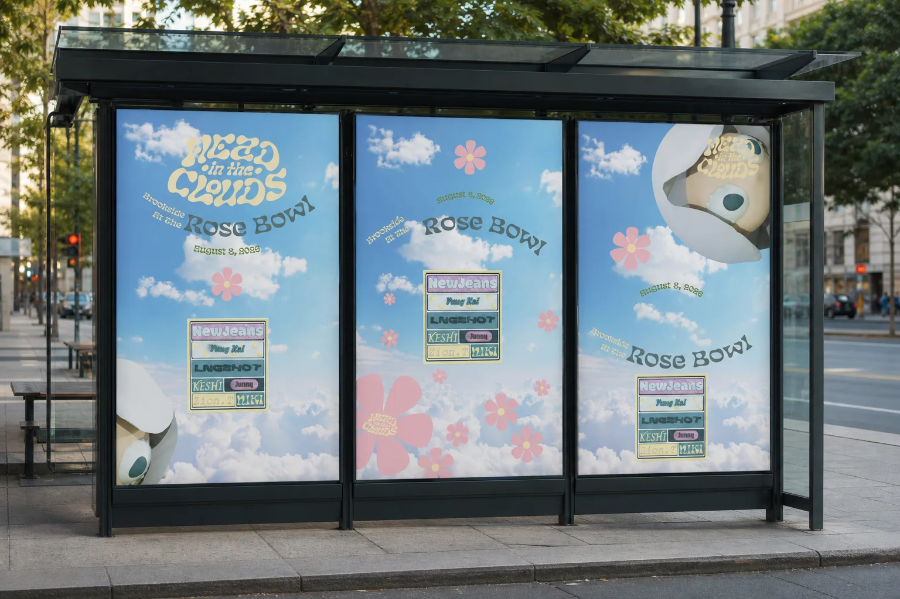
02 User pain points
The music is never the problem.
Mapping the attendee journey revealed two emotional valleys. Before the music: heat, parking, security, and hours spent holding a spot at the barricade. After the music: a crowd funneled through small gates, shuttle lines, and rideshare surges, so the worst part of the night becomes the last memory of it.
The most telling signal was the pile of fan-written survival guides. When users write their own documentation for your product, the problem isn’t missing content; it’s information architecture.
- Heat and shade. 80–90°F afternoons on a golf course with little cover.
- Scattered information. Fans rely on Reddit for packing, parking, and pass advice.
- Confusing pass tiers. “Is VIP worth it?” is one of the most repeated questions.
- Fandom versus discovery. Superfans won’t leave their spot to explore.
- Transactional activations. Too many lines end in merch rather than play.
- Getting out. Exits, shuttles, and rideshare waits end the night badly.
03 Design response: the website
Answer the question at the moment it’s asked.
I cut the navigation to four destinations, each matching a stage of the fan’s journey: Lineup (who’s playing), Info (how do I prepare), Merch (what can I take home), and Buy Now (how do I get in). Every page was designed for desktop and for the phone a fan is actually holding at the gate.
Pick a page below, then scroll inside either screen to see the whole layout.
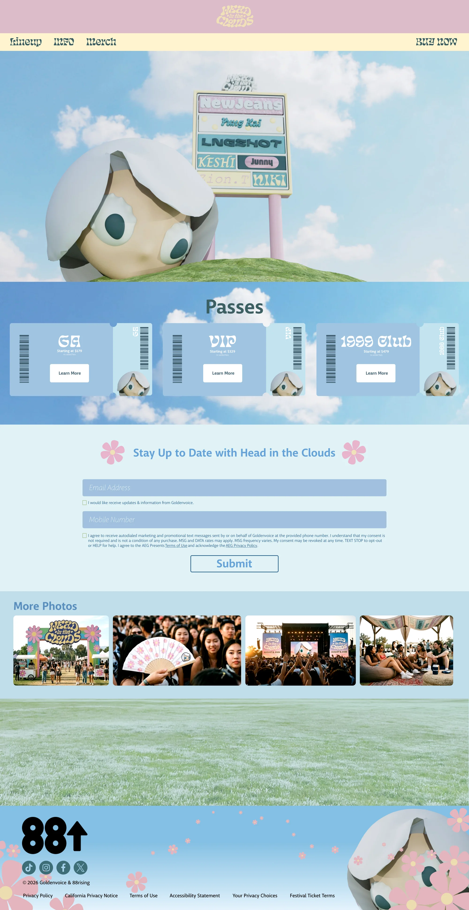
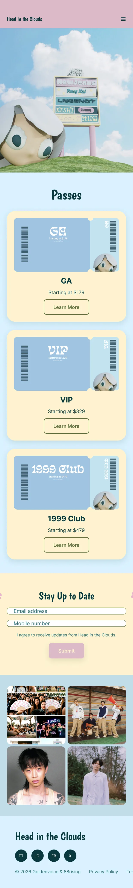
The home page leads with the brand world, then goes straight to passes. One scroll answers what this is and how to get in.
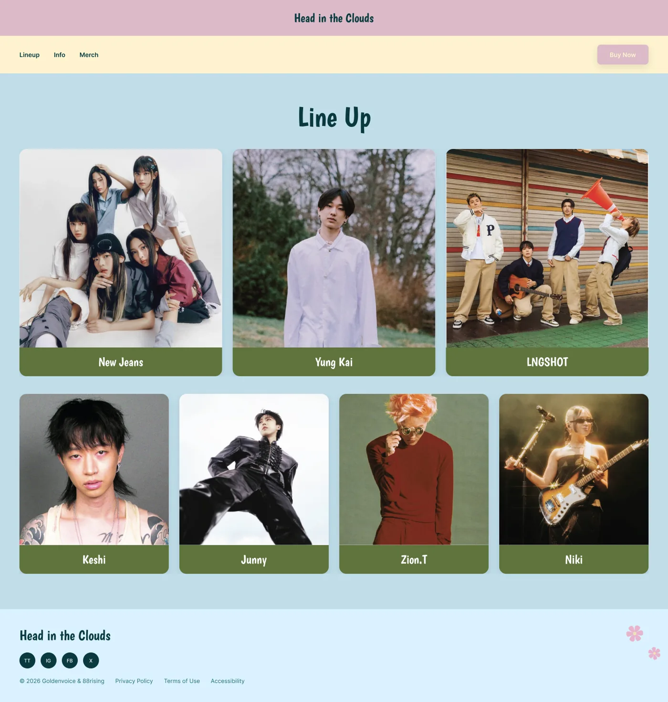
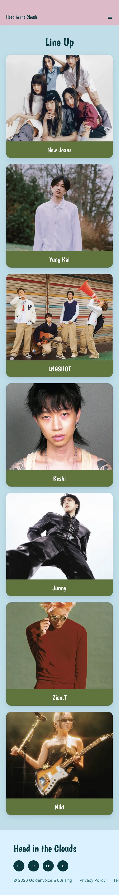
Faces, not text. Headliners get larger cards, so a fan knows within seconds whether their artist is playing and how big the slot is.
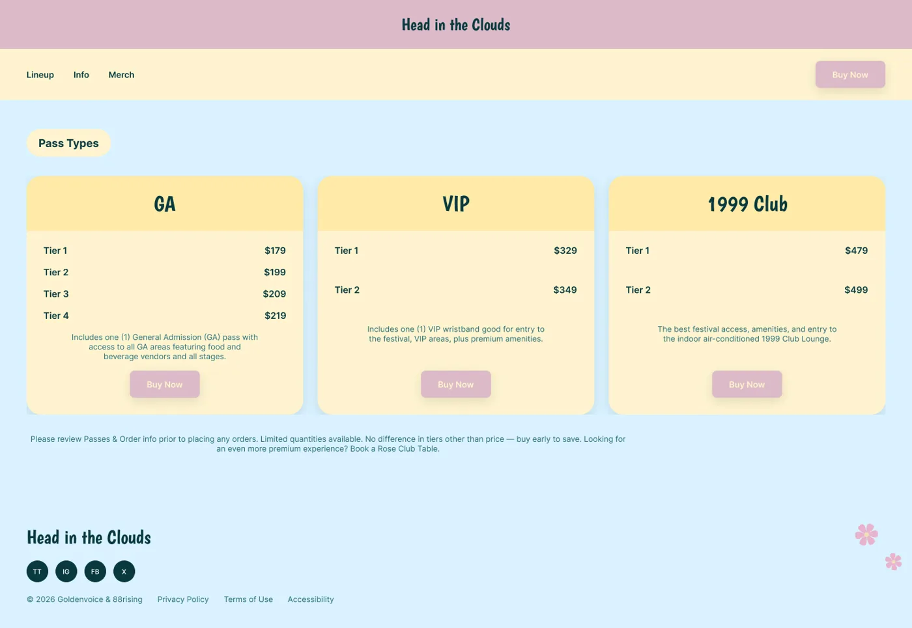
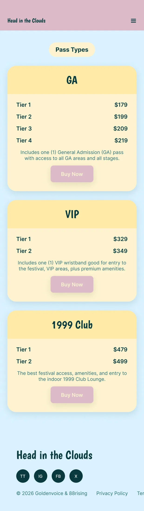
GA, VIP, and 1999 Club as matching cards: same structure, same order, “no added fees” up front. Comparison becomes a scan, not detective work.
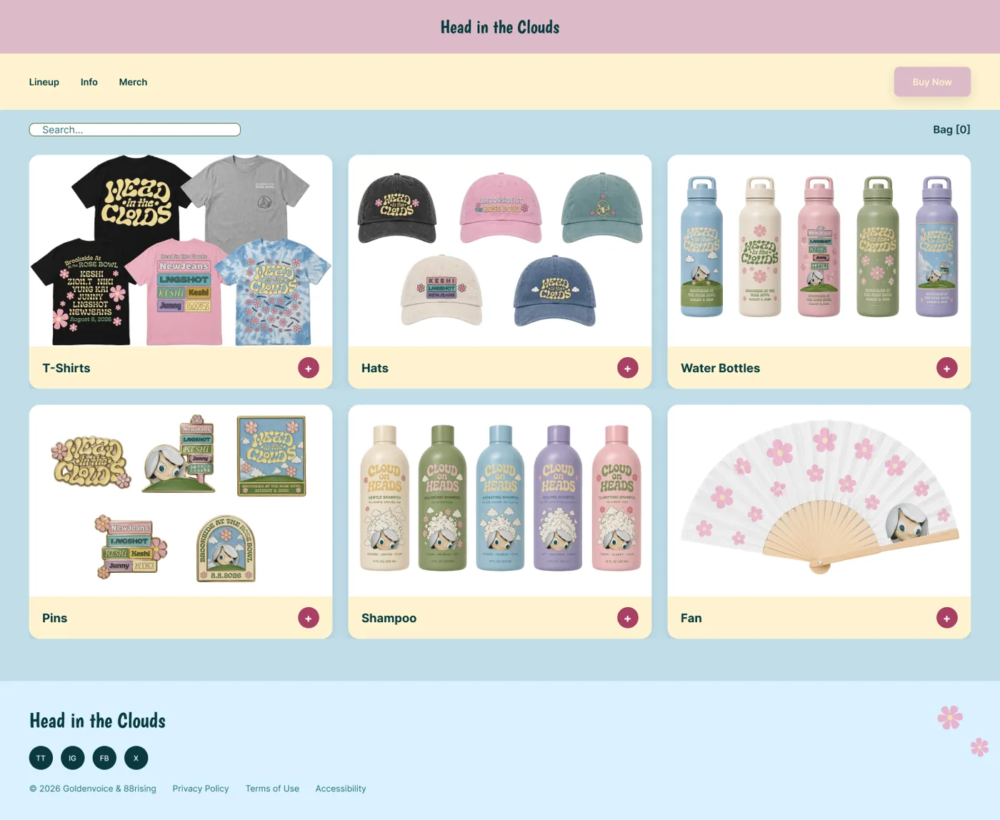
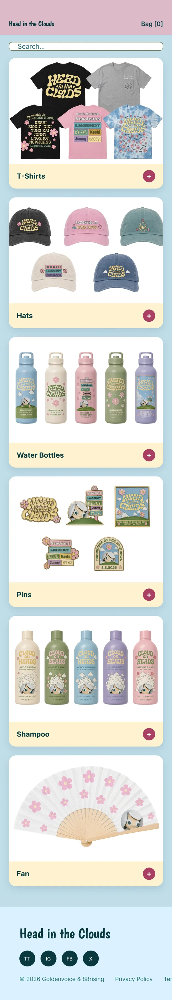
Merch designed for the day: a hand fan and palette-colored bottles for the heat, and pins made to be traded.
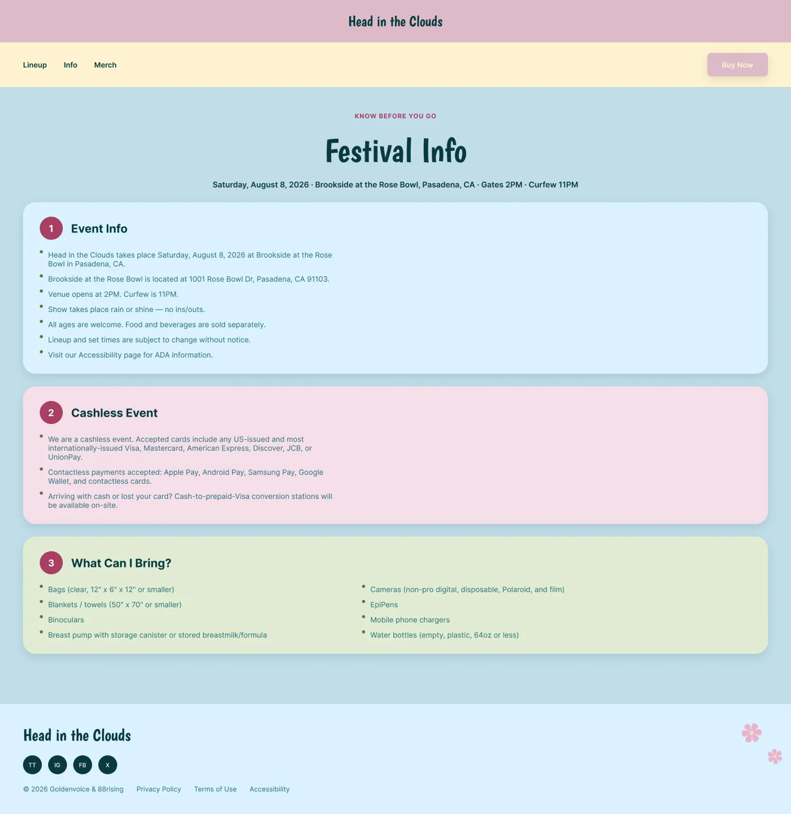
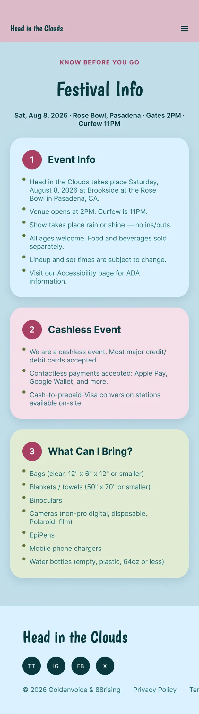
Built around the questions fans actually ask. Date, venue, gate and curfew times come first; each section gets a numbered badge and its own color so a first-timer can scan.
04 Legibility and accessibility
Softness belongs in the background, not the text.
My first draft had cream links on a white bar, white placeholders on light blue, and cream labels on pink buttons. It looked dreamy and it was hard to read, which matters at an outdoor festival where people check their phones in bright August sun.
I moved every piece of body text and every interactive label to deep teal on cream or white, turned “Buy Now” into a solid button, and gave form fields visible labels and outlined checkboxes. The palette itself came from the venue: the Pasadena sky, late-afternoon light, the flower motif, and Brookside’s grass.
- Sky Blue#AED8E9 · background
- Cream#FFF4D0 · surfaces
- Dusty Pink#DCBBC8 · flowers
- Sage#A0B780 · the hill
- Deep Teal#2A6E78 · all text
05 Identity and merch
Merch designed for the day, not just the souvenir.
A cloud-headed mascot and a pink flower motif run through every touchpoint, so the brand reads as a small world rather than a logo. Pastels signal calm and youth for an audience that describes the festival as a place where they feel at home.
The merch answers the research. A hand fan and water bottles in the palette respond to the heat and pair with the free refill stations. Pins, including a dated “Brookside at the Rose Bowl” badge, are made to be traded, building on the sticker swapping fans already do.
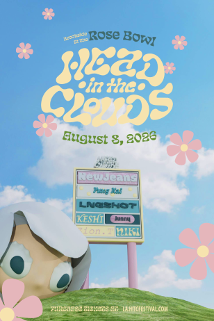
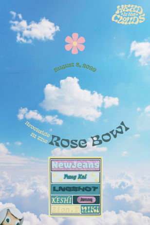
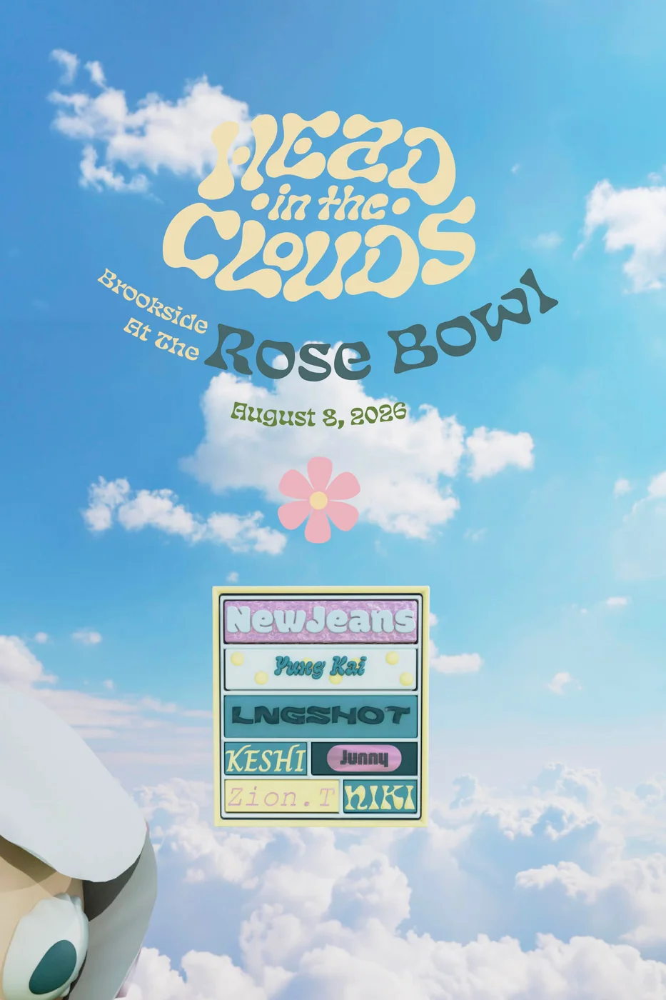
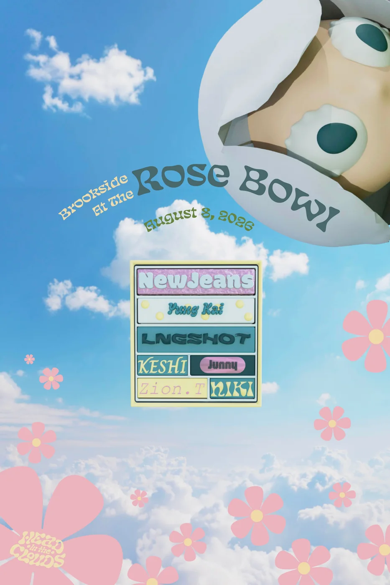
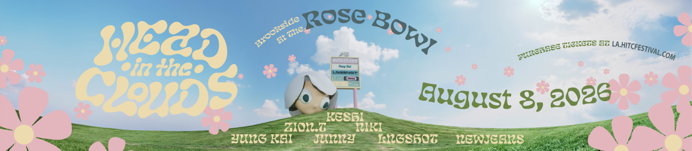
06 Challenge
A dreamy palette people couldn’t read in the sun.
The biggest hurdle in the project, and how I got past it.
The hurdle
The pastel identity was the heart of the rebrand, but my first draft put cream links on a white bar and cream labels on pink buttons. Fans check their phones in bright August sun, so soft text fails at exactly the moment it matters.
How I got past it
I kept the softness in the backgrounds and moved every piece of body text and every interactive label to deep teal on cream or white, about 5.3:1. “Buy Now” became a solid button, and form fields got visible labels and outlined checkboxes.
What it taught me
A brand’s mood can live in color and shape; the words people need to act on have to stay readable.
07 Takeaway
Where it succeeds: making the official site the guide fans were already writing.
A first-time attendee should be able to find what to bring, which pass fits them, and when their artist plays without opening Reddit. That is the measurable win of this redesign: fewer questions asked elsewhere, and a brand that stays readable in the glare of the day it was made for. The research also pointed past this scope. Exit routing and discovery for fans holding their spot belong in a festival app and on-site screens, where the least enjoyable hour of the night could become part of the designed experience.
For first-timers
Preparation answered on one page, in the order people need it.
For superfans
Instant confirmation of their artist, and merch that lets them wear who they came for.
Next phase
Reframe passes as experience types (Explorer, Superfan, Comfort, All Access) and design exit routing for the app.